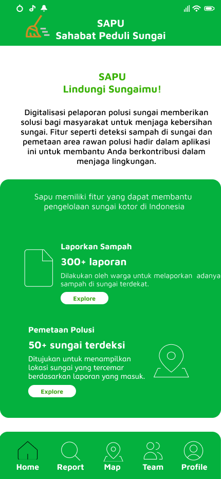
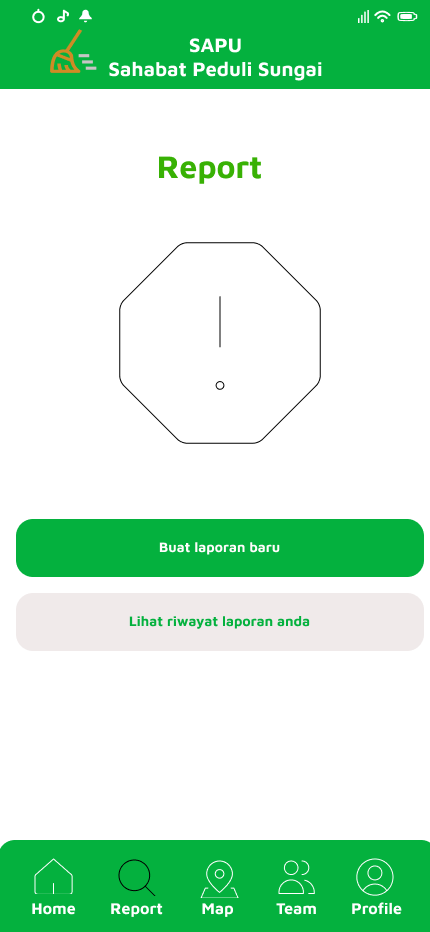
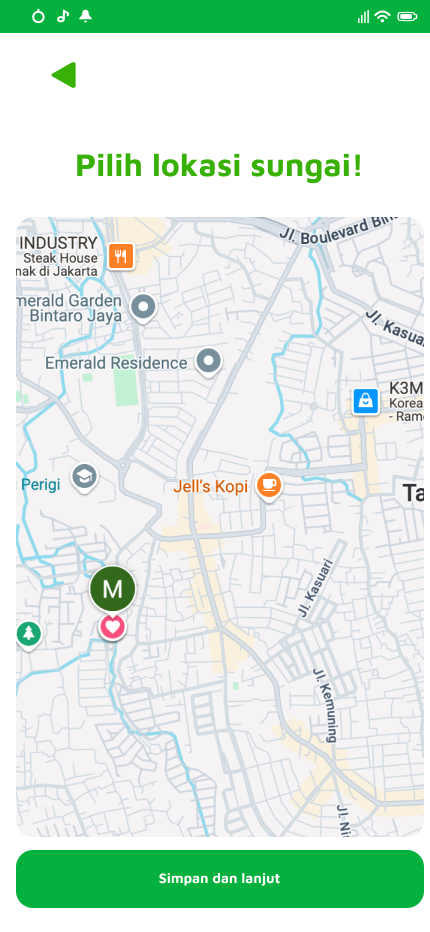
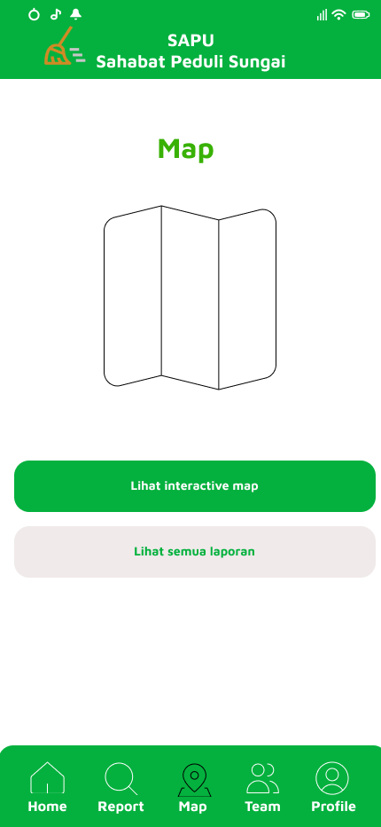
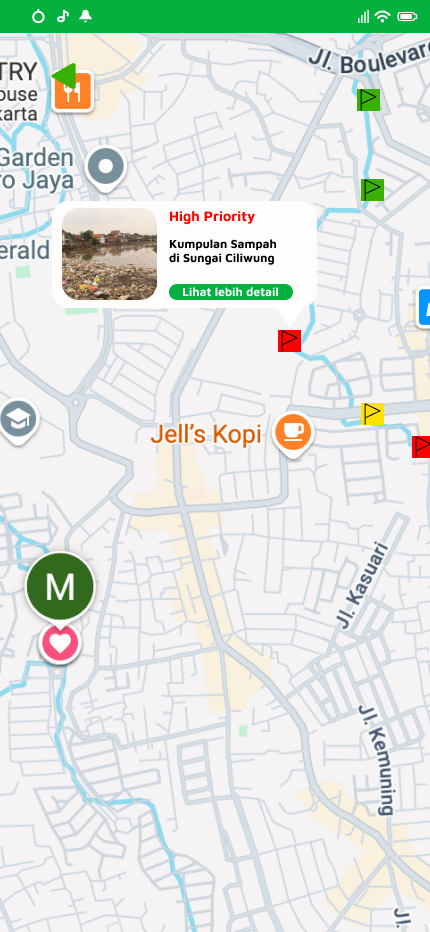

SAPU merupakan capstone project Bangkit Academy yang dirancang sebagai aplikasi pelaporan kebersihan sungai. Project ini dibuat untuk membantu masyarakat dalam melaporkan kondisi sungai yang kotor melalui foto, lokasi laporan, validasi gambar, dan penentuan prioritas kebersihan.

SAPU atau Sahabat Peduli Sungai adalah aplikasi yang berfokus pada pelaporan kondisi sungai. Ide utama project ini berasal dari permasalahan sungai yang kotor dan sulit dipantau secara langsung oleh pihak terkait. Melalui aplikasi ini, pengguna dapat mengirimkan laporan berupa foto kondisi sungai dan lokasi kejadian.
Sistem dirancang agar laporan yang masuk dapat divalidasi dan diberikan tingkat prioritas kebersihan. Dengan adanya prioritas tersebut, pihak pengelola dapat mengetahui laporan mana yang perlu ditangani lebih dulu.
Pengguna dapat mengunggah foto kondisi sungai sebagai bukti laporan.
Sistem menyimpan informasi lokasi agar titik sungai dapat diketahui dengan jelas.
Foto laporan dapat divalidasi untuk memastikan kesesuaian dengan kondisi sungai.
Laporan diberi kategori prioritas seperti tinggi, sedang, atau rendah.
Dokumentasi



